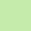

 Emphasized Beneficial BeneficialAssists  Mixed Mixed Inhibits Inhibits Negative Negative |
{{selectionHeading.displayTextLeft}}
{{selectionHeading.displayTextRight}}
|
|---|---|
| {{item.item}} {{item.displayText}} |
|